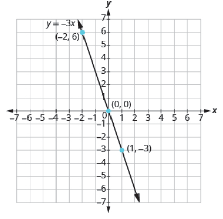
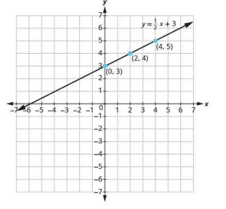
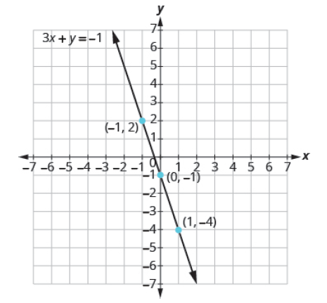
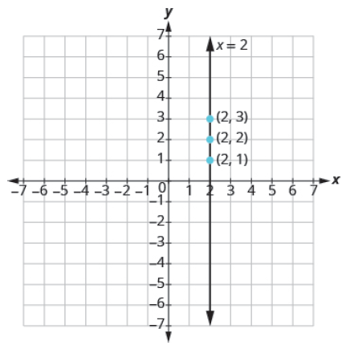
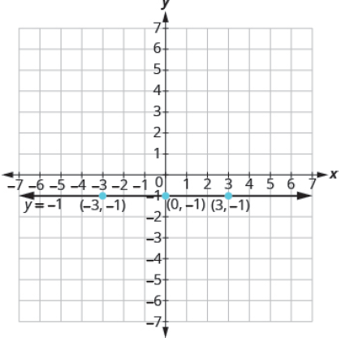

Chapter 4: Graphs
Section 4.2: Graphing Linear Equations
Learning Objective(s)
- Recognize the relation between the solutions of an equation and its graph.
- Graph a linear equation by plotting points.
- Graph vertical and horizontal lines.
Recognize the Relation Between the Solutions of an Equation and its Graph
In the previous section, we introduced the rectangular coordinate system and practiced plotting points. Now we will connect the idea of ordered pairs to the graph of an equation.
Consider the equation \(3x + 2y = 6\). Some solutions to this equation are the ordered pairs \((0, 3)\), \((2, 0)\), \(\left(1, \frac{3}{2}\right)\), and \((4, -3)\). When we plot these points on a rectangular coordinate system, notice how they line up perfectly. We connect the points with a straight line to get the graph of the equation \(3x + 2y = 6\). The arrows on the ends of the line indicate that the line continues in both directions.
Every point on the line is a solution of the equation. Also, every solution of this equation is a point on this line. Points not on the line are not solutions.
For example, the point \((-2, 6)\) is on the line, and if you substitute \(x = -2\) and \(y = 6\) into the equation, you get a true statement. But the point \((4, 1)\) is not on the line — substituting those values gives \(14 \neq 6\), confirming it is not a solution.
This is an example of the saying, "A picture is worth a thousand words." The line shows you all the solutions to the equation at once. This line is called the graph of the equation \(3x + 2y = 6\).
Graph of a Linear Equation
The graph of a linear equation \(Ax + By = C\) is a straight line.
- Every point on the line is a solution of the equation.
- Every solution of this equation is a point on this line.
Example 1
The graph of \(y = 2x - 3\) is shown below.
For each ordered pair, decide: (a) Is the ordered pair a solution to the equation? (b) Is the point on the line?
- \((0, -3)\)
- \((3, 3)\)
- \((2, -3)\)
- \((-1, -5)\)
Solution
Substitute the \(x\)- and \(y\)-values into the equation \(y = 2x - 3\) to check each ordered pair.
| Ordered Pair | Substitute into \(y = 2x - 3\) | Solution? | On the line? |
|---|---|---|---|
| \((0, -3)\) | \(-3 \stackrel{?}{=} 2(0) - 3 \Rightarrow -3 = -3\) ✓ | Yes | Yes |
| \((3, 3)\) | \(3 \stackrel{?}{=} 2(3) - 3 \Rightarrow 3 = 3\) ✓ | Yes | Yes |
| \((2, -3)\) | \(-3 \stackrel{?}{=} 2(2) - 3 \Rightarrow -3 \neq 1\) | No | No |
| \((-1, -5)\) | \(-5 \stackrel{?}{=} 2(-1) - 3 \Rightarrow -5 = -5\) ✓ | Yes | Yes |
The points \((0, -3)\), \((3, 3)\), and \((-1, -5)\) are on the line \(y = 2x - 3\), and the point \((2, -3)\) is not on the line. The points which are solutions to \(y = 2x - 3\) are on the line, but the point which is not a solution is not on the line.
Self Check 1
The graph of \(y = 3x - 1\) is shown. For each ordered pair, decide: (a) Is the ordered pair a solution to the equation? (b) Is the point on the line?
- \((0, -1)\)
- \((2, 2)\)
- \((3, -1)\)
- \((-1, -4)\)
- \((0, -1)\): \(-1 = 3(0) - 1 = -1\) ✓ — Yes, it is a solution and is on the line.
- \((2, 2)\): \(2 \stackrel{?}{=} 3(2) - 1 = 5\) — No, not a solution, not on the line.
- \((3, -1)\): \(-1 \stackrel{?}{=} 3(3) - 1 = 8\) — No, not a solution, not on the line.
- \((-1, -4)\): \(-4 = 3(-1) - 1 = -4\) ✓ — Yes, it is a solution and is on the line.
Graph a Linear Equation by Plotting Points
There are several methods that can be used to graph a linear equation. The method we will use here is called the Point-Plotting Method. Graphically, an equation is a collection of points used to create a picture. In a linear equation, the equation contains both an \(x\) and a \(y\) variable, and its graph is a straight line in a two-dimensional plane.
Suppose we want to graph the equation \(y = 2x + 1\). We start by finding three points that are solutions to the equation. We can choose any value for \(x\) and then solve for \(y\). Since \(y\) is isolated on the left side, it is easier to choose values for \(x\). We will use \(0\), \(1\), and \(-2\) for \(x\).
We can organize the solutions in a table:
| \(x\) | \(y = 2x + 1\) | \((x, y)\) |
|---|---|---|
| \(0\) | \(y = 2(0) + 1 = 1\) | \((0, 1)\) |
| \(1\) | \(y = 2(1) + 1 = 3\) | \((1, 3)\) |
| \(-2\) | \(y = 2(-2) + 1 = -3\) | \((-2, -3)\) |
Now we plot the points on a rectangular coordinate system. Check that the points line up — if they do not, it means we made a mistake and should double-check our work. Then draw the line through the three points, extending it to fill the grid with arrows on both ends.
It is true that it only takes two points to determine a line, but it is a good habit to use three points. If you plot only two points and one of them is incorrect, you can still draw a line but it will not represent the solutions to the equation. If you use three points and one is incorrect, the points will not line up, which tells you something is wrong.
How To: Graph a Linear Equation by Plotting Points
- Make a table with one column labeled \(x\), a second column labeled with the equation, and a third column listing the resulting ordered pairs.
- Enter \(x\)-values down the first column using positive and negative values. Try selecting values in numerical order (smallest to greatest).
- Substitute the \(x\)-values in and calculate the \(y\)-values.
- Plot the points on a rectangular coordinate system. Check that the points line up. If they do not, carefully check your work.
- Draw the line through the points. Extend the line to fill the grid and put arrows on both ends of the line.
Example 2
Graph the equation \(y = -x + 2\) by plotting points.
Solution
First, select 5 to 7 \(x\)-values and substitute them into the equation to find \(y\) and build a table of ordered pairs.
| \(x\) | \(y = -x + 2\) | \((x, y)\) |
|---|---|---|
| \(-3\) | \(y = -(-3) + 2 = 5\) | \((-3, 5)\) |
| \(-2\) | \(y = -(-2) + 2 = 4\) | \((-2, 4)\) |
| \(-1\) | \(y = -(-1) + 2 = 3\) | \((-1, 3)\) |
| \(0\) | \(y = -(0) + 2 = 2\) | \((0, 2)\) |
| \(1\) | \(y = -(1) + 2 = 1\) | \((1, 1)\) |
| \(2\) | \(y = -(2) + 2 = 0\) | \((2, 0)\) |
| \(3\) | \(y = -(3) + 2 = -1\) | \((3, -1)\) |
Next, plot the ordered pairs and draw a line connecting all the points.
Example 3
Graph the equation \(y = -3x\).
Solution
Find three points that are solutions to the equation. It is easier to choose values for \(x\) and solve for \(y\).
| \(x\) | \(y = -3x\) | \((x, y)\) |
|---|---|---|
| \(0\) | \(y = -3(0) = 0\) | \((0, 0)\) |
| \(1\) | \(y = -3(1) = -3\) | \((1, -3)\) |
| \(-2\) | \(y = -3(-2) = 6\) | \((-2, 6)\) |
Plot the points, check that they line up, and draw the line through them with arrows on both ends.

Self Check 2
Graph the equation by plotting points: \(y = -4x\).
Choose three values for \(x\) and solve for \(y\):
| \(x\) | \(y = -4x\) | \((x, y)\) |
|---|---|---|
| \(0\) | \(0\) | \((0, 0)\) |
| \(1\) | \(-4\) | \((1, -4)\) |
| \(-1\) | \(4\) | \((-1, 4)\) |
Plot the three points, verify they line up, and draw the line.
Example 4
Graph the equation \(y = \dfrac{1}{2}x + 3\).
Solution
Since this equation has the fraction \(\frac{1}{2}\) as a coefficient of \(x\), we will choose values of \(x\) carefully to avoid fraction answers, which are hard to graph precisely. We will use zero as one choice and multiples of 2 for the other choices.
| \(x\) | \(y = \frac{1}{2}x + 3\) | \((x, y)\) |
|---|---|---|
| \(0\) | \(y = \frac{1}{2}(0) + 3 = 3\) | \((0, 3)\) |
| \(2\) | \(y = \frac{1}{2}(2) + 3 = 4\) | \((2, 4)\) |
| \(4\) | \(y = \frac{1}{2}(4) + 3 = 5\) | \((4, 5)\) |
Plot the points, check that they line up, and draw the line.

Tip: When an equation has a fractional coefficient, choose \(x\)-values that are multiples of the denominator. This way you will avoid fraction answers and the points will be easier to plot accurately.
Self Check 3
Graph the equation: \(y = \dfrac{1}{3}x - 1\).
Choose multiples of 3 for \(x\) to avoid fractions:
| \(x\) | \(y = \frac{1}{3}x - 1\) | \((x, y)\) |
|---|---|---|
| \(0\) | \(-1\) | \((0, -1)\) |
| \(3\) | \(0\) | \((3, 0)\) |
| \(-3\) | \(-2\) | \((-3, -2)\) |
Plot the three points, verify they line up, and draw the line.
Example 5
Graph the equation \(3x + y = -1\).
Solution
When \(x\) and \(y\) are on the same side of the equation, it is helpful to first solve for \(y\) so we can more easily choose \(x\)-values.
\[\begin{align*} 3x + y &= -1 \\ y &= -3x - 1 \end{align*}\]Now choose values for \(x\) and solve for \(y\).
| \(x\) | \(y = -3x - 1\) | \((x, y)\) |
|---|---|---|
| \(0\) | \(y = -3(0) - 1 = -1\) | \((0, -1)\) |
| \(1\) | \(y = -3(1) - 1 = -4\) | \((1, -4)\) |
| \(-1\) | \(y = -3(-1) - 1 = 2\) | \((-1, 2)\) |
Plot the points, check that they line up, and draw the line.

Self Check 4
Graph the equation: \(2x + y = 2\).
First solve for \(y\): \(y = -2x + 2\). Then choose values for \(x\):
| \(x\) | \(y = -2x + 2\) | \((x, y)\) |
|---|---|---|
| \(0\) | \(2\) | \((0, 2)\) |
| \(1\) | \(0\) | \((1, 0)\) |
| \(-1\) | \(4\) | \((-1, 4)\) |
Plot the three points, verify they line up, and draw the line.
Graph Vertical and Horizontal Lines
Can we graph an equation with only one variable — just \(x\) and no \(y\), or just \(y\) without an \(x\)? Let's consider the equation \(x = -3\). This equation says that \(x\) is always equal to \(-3\), so its value does not depend on \(y\). No matter what \(y\) is, the value of \(x\) is always \(-3\).
To make a table of solutions, we write \(-3\) for all the \(x\)-values, then choose any values for \(y\). When we plot the points and connect them, we get a vertical line.
| \(x\) | \(y\) | \((x, y)\) |
|---|---|---|
| \(-3\) | \(1\) | \((-3, 1)\) |
| \(-3\) | \(2\) | \((-3, 2)\) |
| \(-3\) | \(3\) | \((-3, 3)\) |
Vertical Line
A vertical line is the graph of an equation that can be written in the form \(x = a\).
The line passes through the \(x\)-axis at \((a, 0)\).
Example 6
Graph the equation \(x = 2\). What type of line does it form?
Solution
The equation has only one variable, \(x\), and \(x\) is always equal to \(2\). We make a table where \(x\) is always \(2\) and we put in any values for \(y\).
| \(x\) | \(y\) | \((x, y)\) |
|---|---|---|
| \(2\) | \(1\) | \((2, 1)\) |
| \(2\) | \(2\) | \((2, 2)\) |
| \(2\) | \(3\) | \((2, 3)\) |
Plot the points and connect them. The graph is a vertical line passing through the \(x\)-axis at \(2\).

Self Check 5
Graph the equation: \(x = 5\).
The equation \(x = 5\) means \(x\) is always \(5\), regardless of \(y\). The graph is a vertical line passing through the \(x\)-axis at \(5\).
| \(x\) | \(y\) | \((x, y)\) |
|---|---|---|
| \(5\) | \(1\) | \((5, 1)\) |
| \(5\) | \(2\) | \((5, 2)\) |
| \(5\) | \(3\) | \((5, 3)\) |
What if the equation has \(y\) but no \(x\)? Let's graph the equation \(y = 4\). This time the \(y\)-value is a constant, so \(y\) does not depend on \(x\). To make a table of solutions, we write \(4\) for all the \(y\)-values and choose any values for \(x\). When we plot the points and connect them, we get a horizontal line.
| \(x\) | \(y\) | \((x, y)\) |
|---|---|---|
| \(0\) | \(4\) | \((0, 4)\) |
| \(2\) | \(4\) | \((2, 4)\) |
| \(4\) | \(4\) | \((4, 4)\) |
Horizontal Line
A horizontal line is the graph of an equation that can be written in the form \(y = b\).
The line passes through the \(y\)-axis at \((0, b)\).
Example 7
Graph the equation \(y = -1\).
Solution
The equation \(y = -1\) has only one variable, \(y\). The value of \(y\) is constant. All the ordered pairs in the table have the same \(y\)-coordinate, \(-1\). We choose \(0\), \(3\), and \(-3\) as values for \(x\).
| \(x\) | \(y\) | \((x, y)\) |
|---|---|---|
| \(-3\) | \(-1\) | \((-3, -1)\) |
| \(0\) | \(-1\) | \((0, -1)\) |
| \(3\) | \(-1\) | \((3, -1)\) |
Plot the points and connect them. The graph is a horizontal line passing through the \(y\)-axis at \(-1\).

Self Check 6
Graph the equation: \(y = -4\).
The equation \(y = -4\) means \(y\) is always \(-4\), regardless of \(x\). The graph is a horizontal line passing through the \(y\)-axis at \(-4\).
| \(x\) | \(y\) | \((x, y)\) |
|---|---|---|
| \(-3\) | \(-4\) | \((-3, -4)\) |
| \(0\) | \(-4\) | \((0, -4)\) |
| \(3\) | \(-4\) | \((3, -4)\) |
Notice the difference between the equations \(y = 4x\) and \(y = 4\). The equation \(y = 4x\) has both \(x\) and \(y\) — the value of \(y\) depends on \(x\) and changes accordingly, giving a slanted line. The equation \(y = 4\) has only one variable — the value of \(y\) is constant, always \(4\), giving a horizontal line.
Exercises
Recognize the Relation Between Solutions and the Graph
For each ordered pair, decide (a) is the ordered pair a solution to the equation? (b) is the point on the line?
- \(y = x + 2\) (1) \((0, 2)\) (2) \((1, 2)\) (3) \((-1, 1)\) (4) \((-3, 1)\)
- \(y = x - 4\) (1) \((0, -4)\) (2) \((3, -1)\) (3) \((2, 2)\) (4) \((1, -5)\)
- \(y = \frac{1}{2}x - 3\) (1) \((0, -3)\) (2) \((2, -2)\) (3) \((-2, -4)\) (4) \((4, 1)\)
- \(y = \frac{1}{3}x + 2\) (1) \((0, 2)\) (2) \((3, 3)\) (3) \((-3, 2)\) (4) \((-6, 0)\)
Graph a Linear Equation by Plotting Points
In the following exercises, graph by plotting points.
Graph Vertical and Horizontal Lines
In the following exercises, graph the vertical or horizontal line.
In the following exercises, graph each pair of equations in the same rectangular coordinate system.
Mixed Practice
In the following exercises, graph each equation.
Everyday Math
- Motor home cost. The Robinsons rented a motor home for one week. It cost them $594 plus $0.32 per mile, so the linear equation \(y = 594 + 0.32x\) gives the cost \(y\) for driving \(x\) miles. Calculate the rental cost for driving 400, 800, and 1,200 miles, then graph the line.
- Weekly earnings. Salvador gets paid $200 per week plus 15% of his sales, so the equation \(y = 200 + 0.15x\) gives the amount \(y\) he earns for selling \$x\) of artwork. Calculate the amount Salvador earns for selling $900, $1,600, and $2,000, then graph the line.
Writing Exercises
- Explain how you would choose three \(x\)-values to make a table to graph the line \(y = \frac{1}{5}x - 2\).
- What is the difference between the equations of a vertical line and a horizontal line?
Exercises adapted from OpenStax Prealgebra, available free at cnx.org/content/col11756/1.9.